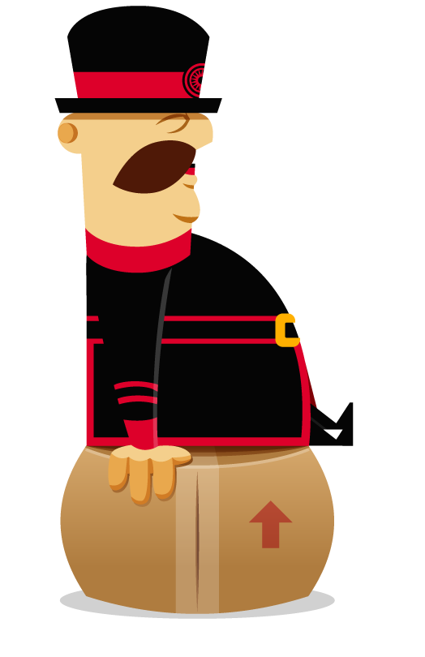

FREQUENTLY ASKED QUESTIONS
What is Yeoman?
Yeoman is a robust and opinionated client-side stack, comprised of tools and frameworks that can help developers quickly build beautiful web applications. The project was initially announced at Google I/O and it's capabilities include:
- Lightning-fast scaffolding — Easily scaffold new projects with customizable templates (e.g HTML5 Boilerplate, Twitter Bootstrap), AMD (via RequireJS) and more.
- Automatically compile CoffeeScript & Compass — Our LiveReload watch process automatically compiles source files and refreshes your browser whenever a change is made so you don't have to.
- Automatically lint your scripts — All your scripts are automatically run against jshint to ensure they're following language best-practices.
- Built-in preview server — No more having to fire up your own HTTP Server. My built-in one can be fired with just one command.
- Awesome Image Optimization — I optimize all your images using OptiPNG and JPEGTran so your users can spend less time downloading assets and more time using your app.
- AppCache manifest generation — I generate your application cache manifests for you. Just build a project and boom. You'll get it for free.
- Killer build process — Not only do you get minification and concatenation; I also optimize all your image files, HTML, compile your CoffeeScript and Compass files, generate you an application cache manifest and, if you're using AMD, we'll pass those modules through r.js so you don't have to.
- Integrated package management — Need a dependency? It's just a keystroke away. I allow you to easily search for new packages via the command-line (e.g., yeoman search jquery), install them and keep them updated without needing to open your browser.
- Support for ES6 module syntax — Experiment with writing modules using the latest ECMAScript 6 module syntax. This is an experimental feature that transpiles back to ES5 so you can use the code in all modern browsers.
- PhantomJS Unit Testing — Easily run your unit tests in headless WebKit via PhantomJS. When you create a new application, I also include some test scaffolding for your app.
Yeoman harnesses the power of a number of different open-source tools and libraries, including Grunt and Twitter Bootstrap.
What is a command-line interface?
A command-line interface is a means for developers to interact with a system using text commands. On OSX this this is often done using the Terminal and on Windows we use the command shell or a third-party tool such as Cygwin.
What is a package manager?
A package manager runs through a command-line interface and is a tool for automating the process of installing, upgrading, configuring and managing dependencies for projects. An example of a package management registry is NPM.
What are the goals of the project?
The short-term goals for Yeoman are to provide developers with an improved tooling workflow so that they can spend less time on process and more time focusing on building beautiful web applications. Initially, we hope to make it as easy as possible to work with existing frameworks and tools developers are used to using.
Long-term, the project may also assist developers with creating applications using modern technologies such as Web Components.
Will the project be providing Generators for popular frameworks?
Our goal is to facilitate both developers and the community with the tools needed to create rich web applications easily. With that goal in mind, we'll be providing a great API (and docs) to our Generators system with examples of how to implement samples, but will rely on the community to create and maintain Generators for popular frameworks. This will allow us to focus on making Yeoman better without he distractions of maintaining a large number of Generators.
What license is Yeoman released under?
Yeoman is released under a BSD license.
